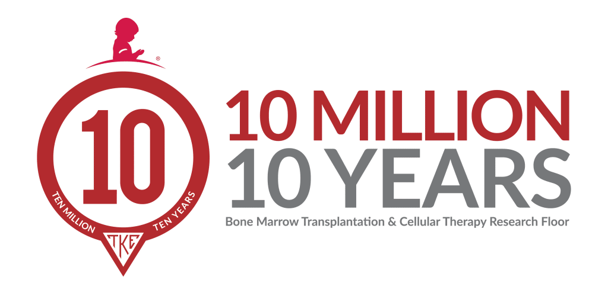

We fundraise so kids
don't have to pay
for cancer care.
Tau Kappa Epsilon has raised money for St. Jude Children's Research Hospital since 1998. At Florida Tech, the Fraters of Omicron Nu do it with a Twitch stream, a list of goals, and a lot of hours on camera.

The stream
Every dollar pledged on stream is added to our goal tracker; We read donors on air, take game requests, and compete in live activities when goals are hit.
Upcoming Events
| Date | Event | Where |
|---|---|---|
| TBD | Fall 2026 - St. Jude 24 hour livestream | Twitch |
St. Jude Children's Research Hospital
Families at St. Jude never receive a bill for treatment, travel, housing, or food. That model runs on donors, and St. Jude has been Tau Kappa Epsilon's national philanthropy for more than two decades. Omicron Nu's share is raised almost entirely on stream and through community donations.

$10 million in ten years, toward a research floor with our name on it.
Every dollar Omicron Nu raises counts toward TKE's 10 in 10 commitment to the Bone Marrow Transplantation & Cellular Therapy Research Floor at St. Jude.
Donation totals
| Year | Raised | Goal | Notes |
|---|---|---|---|
| 2025–2026 | $12,745 | $10,000 | 127% of goal - 2 Fraters sent to St. Jude Next-Gen 2026 |
| 2024–2025 | $11,000 | $5,000 | 220% of goal - One frater sent to St. Jude Next-Gen 2025 |
Ways to give
Follow the channel and Twitch will tell you the moment we go live.
How our goals work
Donate through the St. Jude portal during a broadcast.
Your name and message appear on the overlay and get read on air.
Each stream has a set of donation goals, leading to on stream events like getting our heads shaved!
Omicron Nu at Florida Tech
Our mission is to aid men in their mental, moral and social development for life. In Melbourne that means engineers, aviators, and scholars who show up for each other — and for a hospital nine hundred miles away.